Serving: throughput, latency, speed per user
Qwen/Qwen3.5-9B on NVIDIA H100 PCIe (81,559 MiB, driver 580.196.07), SGLang c8ea707971 with 9 changed files. 2 servers, 4 load points. Baseline for the ratios: bf16 state + 16-token window (ratio = server ÷ baseline: above 1 is better for throughput and speed, below 1 for times and memory).
Every load point at a glance
The numbers public benchmarks lead with. Means over the repetitions where a point was run more than once (each repetition is in the full table at the end).
| Load point | Server | Output tokens/s | ÷ baseline | Speed per user, tokens/s | TTFT median, s | TTFT p99, s | TPOT median, ms | ITL p99, ms | E2E median, s | E2E p99, s | Peak GPU memory, GiB |
|---|---|---|---|---|---|---|---|---|---|---|---|
| 128/512 · 128 users | bf16 state + 16-token window | 7,010 | 58.1 | 0.55 | 0.79 | 17.2 | 19 | 9.3 | 9.3 | 69.7 | |
| 128/512 · 128 users | LeapQuant (CUDA fold) | 7,017 | 1.001 | 59.4 | 0.71 | 0.97 | 16.8 | 23 | 9.3 | 9.3 | 65.5 |
| 128/512 · 512 users | bf16 state + 16-token window | 10,387 | 31.6 | 1.65 | 18.74 | 31.7 | 38 | 17.8 | 35.3 | 69.8 | |
| 128/512 · 512 users | LeapQuant (CUDA fold) | 9,759 | 0.940 | 26.0 | 2.13 | 22.54 | 38.5 | 59 | 21.8 | 43.3 | 65.8 |
| 128/2,048 · 512 users | bf16 state + 16-token window | 7,745 | 39.9 | 52.58 | 104.89 | 25.1 | 32 | 104.6 | 135.3 | 70.2 | |
| 128/2,048 · 512 users | LeapQuant (CUDA fold) | 7,919 | 1.022 | 41.7 | 50.61 | 101.05 | 24.0 | 37 | 100.6 | 132.3 | 65.8 |
| 512/512 random · 512 users | bf16 state + 16-token window | 6,479 | 18.2 | 5.69 | 11.24 | 54.9 | 99 | 18.2 | 33.8 | 70.2 | |
| 512/512 random · 512 users | LeapQuant (CUDA fold) | 6,006 | 0.927 | 13.9 | 3.36 | 8.42 | 71.8 | 114 | 19.7 | 40.1 | 65.8 |
Charts
Output token throughput
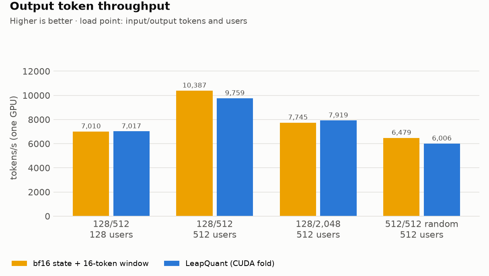
| Load point | bf16 state + 16-token window | LeapQuant (CUDA fold) |
|---|---|---|
| 128/512 · 128 users | 7,010 | 7,017 |
| 128/512 · 512 users | 10,387 | 9,759 |
| 128/2,048 · 512 users | 7,745 | 7,919 |
| 512/512 random · 512 users | 6,479 | 6,006 |
Speed per user (interactivity), median
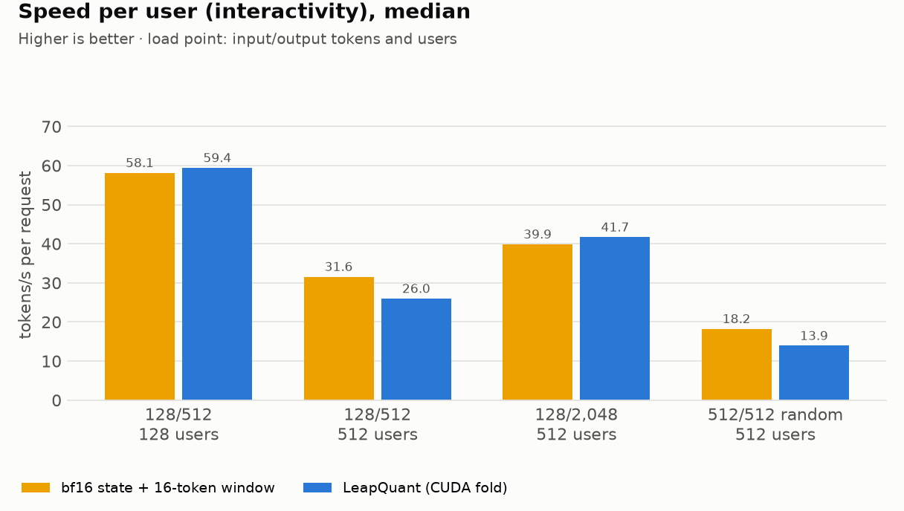
| Load point | bf16 state + 16-token window | LeapQuant (CUDA fold) |
|---|---|---|
| 128/512 · 128 users | 58.1 | 59.4 |
| 128/512 · 512 users | 31.6 | 26.0 |
| 128/2,048 · 512 users | 39.9 | 41.7 |
| 512/512 random · 512 users | 18.2 | 13.9 |
Request throughput
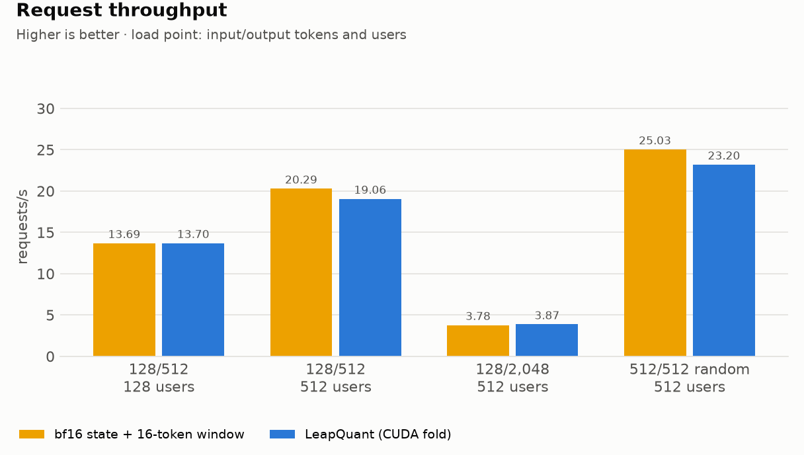
| Load point | bf16 state + 16-token window | LeapQuant (CUDA fold) |
|---|---|---|
| 128/512 · 128 users | 13.69 | 13.70 |
| 128/512 · 512 users | 20.29 | 19.06 |
| 128/2,048 · 512 users | 3.78 | 3.87 |
| 512/512 random · 512 users | 25.03 | 23.20 |
Time to first token, median
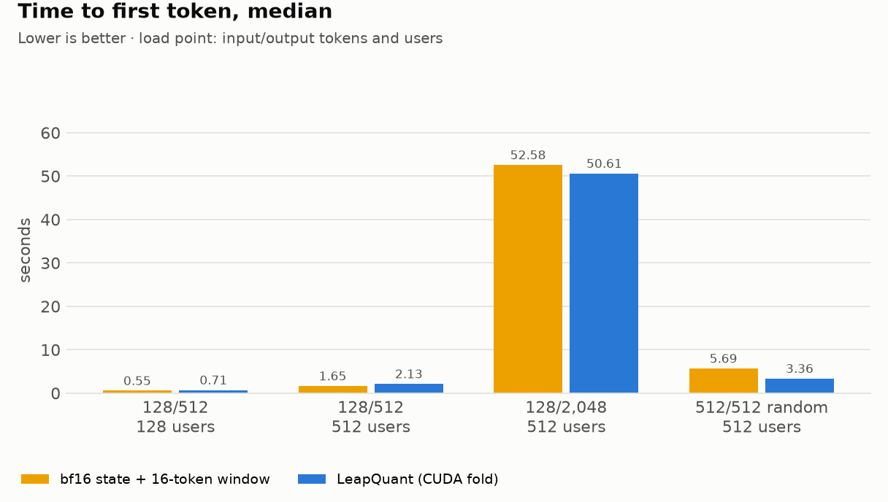
| Load point | bf16 state + 16-token window | LeapQuant (CUDA fold) |
|---|---|---|
| 128/512 · 128 users | 0.55 | 0.71 |
| 128/512 · 512 users | 1.65 | 2.13 |
| 128/2,048 · 512 users | 52.58 | 50.61 |
| 512/512 random · 512 users | 5.69 | 3.36 |
Time to first token, p99
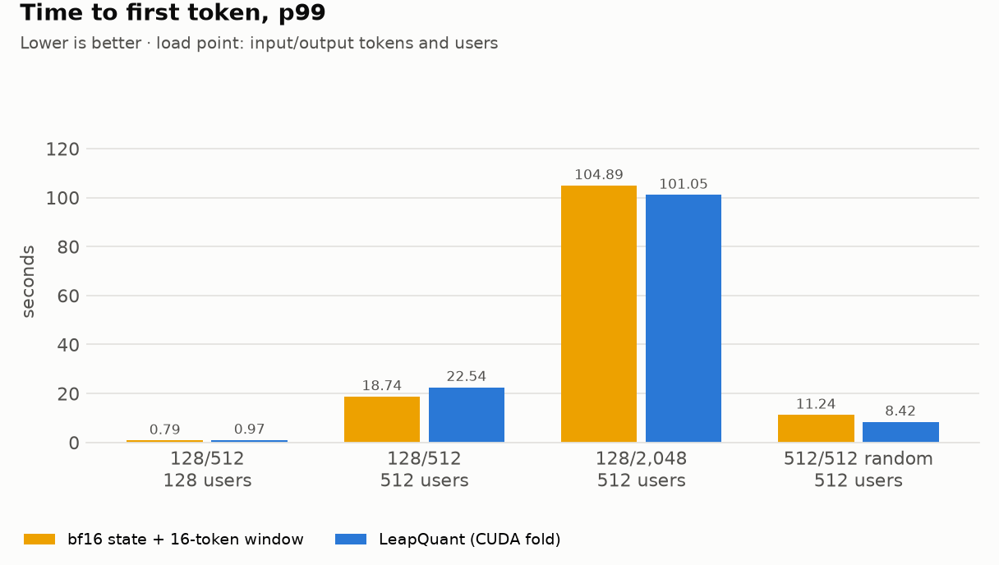
| Load point | bf16 state + 16-token window | LeapQuant (CUDA fold) |
|---|---|---|
| 128/512 · 128 users | 0.79 | 0.97 |
| 128/512 · 512 users | 18.74 | 22.54 |
| 128/2,048 · 512 users | 104.89 | 101.05 |
| 512/512 random · 512 users | 11.24 | 8.42 |
Time between tokens, median
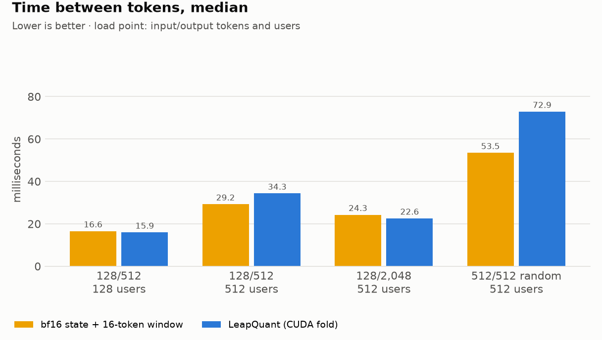
| Load point | bf16 state + 16-token window | LeapQuant (CUDA fold) |
|---|---|---|
| 128/512 · 128 users | 16.6 | 15.9 |
| 128/512 · 512 users | 29.2 | 34.3 |
| 128/2,048 · 512 users | 24.3 | 22.6 |
| 512/512 random · 512 users | 53.5 | 72.9 |
Time between tokens, p99 (steps with a prefill or a fold)
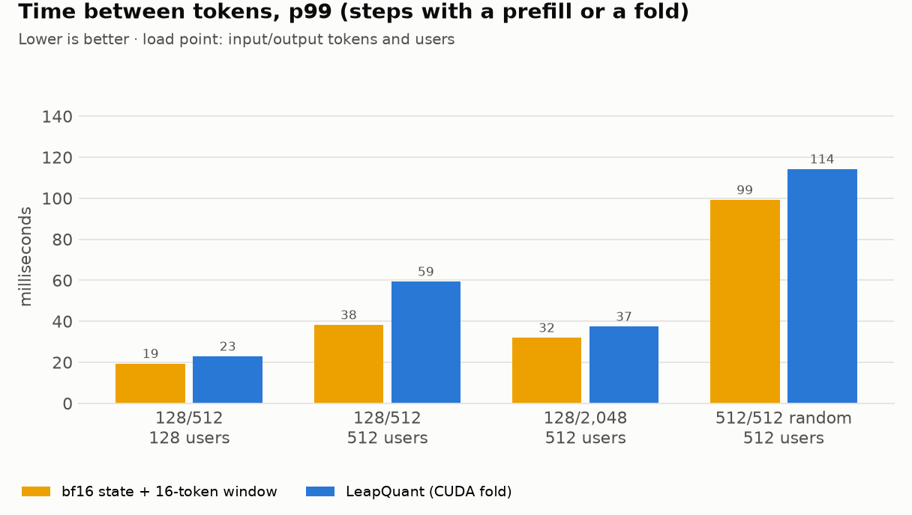
| Load point | bf16 state + 16-token window | LeapQuant (CUDA fold) |
|---|---|---|
| 128/512 · 128 users | 19 | 23 |
| 128/512 · 512 users | 38 | 59 |
| 128/2,048 · 512 users | 32 | 37 |
| 512/512 random · 512 users | 99 | 114 |
End-to-end latency, median
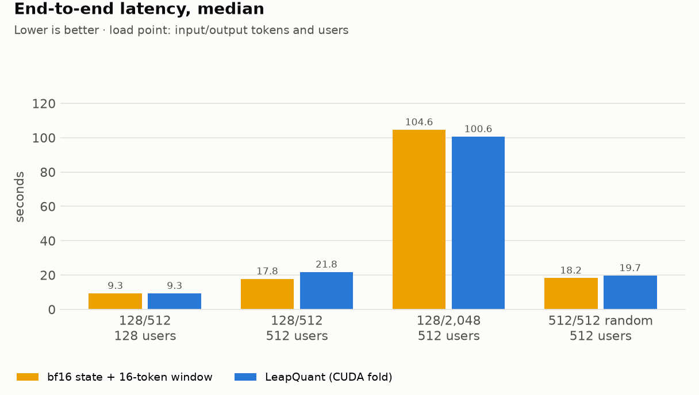
| Load point | bf16 state + 16-token window | LeapQuant (CUDA fold) |
|---|---|---|
| 128/512 · 128 users | 9.3 | 9.3 |
| 128/512 · 512 users | 17.8 | 21.8 |
| 128/2,048 · 512 users | 104.6 | 100.6 |
| 512/512 random · 512 users | 18.2 | 19.7 |
End-to-end latency, p99
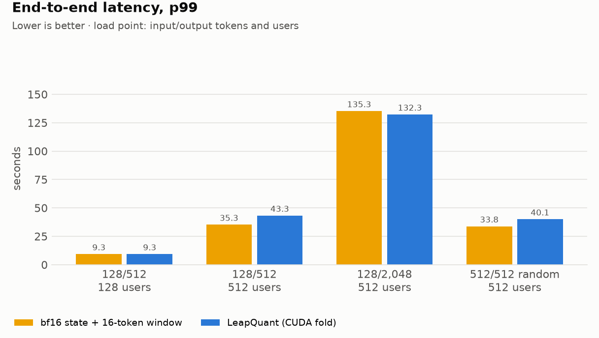
| Load point | bf16 state + 16-token window | LeapQuant (CUDA fold) |
|---|---|---|
| 128/512 · 128 users | 9.3 | 9.3 |
| 128/512 · 512 users | 35.3 | 43.3 |
| 128/2,048 · 512 users | 135.3 | 132.3 |
| 512/512 random · 512 users | 33.8 | 40.1 |
Peak GPU memory during the point
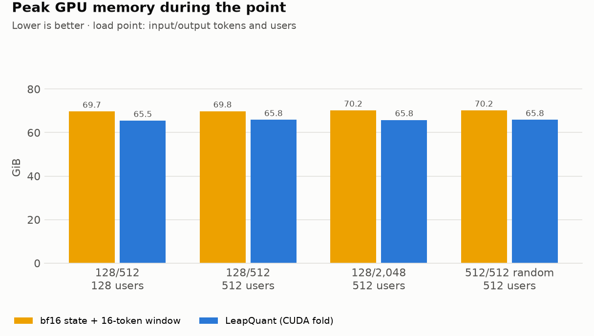
| Load point | bf16 state + 16-token window | LeapQuant (CUDA fold) |
|---|---|---|
| 128/512 · 128 users | 69.7 | 65.5 |
| 128/512 · 512 users | 69.8 | 65.8 |
| 128/2,048 · 512 users | 70.2 | 65.8 |
| 512/512 random · 512 users | 70.2 | 65.8 |
Concurrency sweep: 128 in / 512 out, exact lengths
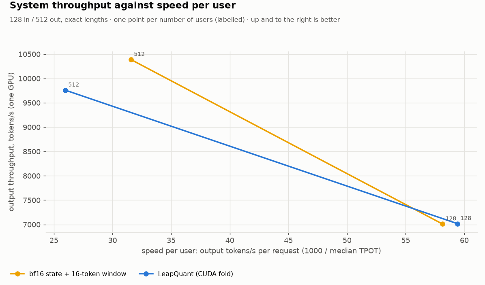
Every metric, per load point
All the numbers the benchmark client reports, grouped as public benchmark reports group them, with the ratio to the baseline.
128 in / 512 out, exact lengths · 128 users
| Metric | bf16 state + 16-token window | LeapQuant (CUDA fold) | LeapQuant (CUDA fold) ÷ bf16 state + 16-token window |
|---|---|---|---|
| Throughput (one GPU: also the figure per GPU) | |||
| Output token throughput (tok/s) | 7,010 | 7,017 | 1.001 |
| Total token throughput (tok/s) | 8,762 | 8,771 | 1.001 |
| Input token throughput (tok/s) | 1,752 | 1,754 | 1.001 |
| Request throughput (req/s) | 13.69 | 13.70 | 1.001 |
| Peak output token throughput (tok/s) | 8,000 | 8,192 | 1.024 |
| Speed per user (interactivity) | |||
| Speed per user, median (tok/s) | 58.1 | 59.4 | 1.022 |
| Speed per user, 90% of requests at least (tok/s) | 55.8 | 56.5 | 1.012 |
| Speed per user, 99% of requests at least (tok/s) | 55.8 | 56.4 | 1.012 |
| Time to first token | |||
| Mean TTFT (ms) | 538 | 673 | 1.250 |
| Median TTFT (ms) | 553 | 714 | 1.293 |
| P90 TTFT (ms) | 780 | 962 | 1.235 |
| P95 TTFT (ms) | 786 | 970 | 1.234 |
| P99 TTFT (ms) | 787 | 971 | 1.234 |
| Time per output token (after the first) | |||
| Mean TPOT (ms) | 17.2 | 16.9 | 0.984 |
| Median TPOT (ms) | 17.2 | 16.8 | 0.978 |
| P90 TPOT (ms) | 17.9 | 17.7 | 0.988 |
| P95 TPOT (ms) | 17.9 | 17.7 | 0.988 |
| P99 TPOT (ms) | 17.9 | 17.7 | 0.988 |
| Time between tokens | |||
| Mean ITL (ms) | 17.2 | 16.9 | 0.984 |
| Median ITL (ms) | 16.6 | 15.9 | 0.963 |
| P90 ITL (ms) | 17.2 | 16.6 | 0.966 |
| P95 ITL (ms) | 18.5 | 21.6 | 1.168 |
| P99 ITL (ms) | 19.3 | 22.8 | 1.184 |
| Max ITL (ms) | 729 | 935 | 1.283 |
| End-to-end latency | |||
| Mean E2E Latency (ms) | 9,323 | 9,315 | 0.999 |
| Median E2E Latency (ms) | 9,329 | 9,318 | 0.999 |
| P90 E2E Latency (ms) | 9,345 | 9,325 | 0.998 |
| P95 E2E Latency (ms) | 9,345 | 9,326 | 0.998 |
| P99 E2E Latency (ms) | 9,346 | 9,330 | 0.998 |
| Load, requests, tokens, memory | |||
| Max request concurrency | 128 | 128 | |
| Concurrency | 127.65 | 127.65 | |
| Peak concurrent requests | 256 | 256 | |
| Successful requests | 256 | 256 | |
| Benchmark duration (s) | 18.7 | 18.7 | 0.999 |
| Total input tokens | 32,768 | 32,768 | |
| Total generated tokens | 131,072 | 131,072 | |
| Peak GPU memory (MiB) | 71,366 | 67,028 | 0.939 |
| Client settings | |||
| Prompts | 256 | 256 | |
| Input / output tokens | 128 / 512 exact | 128 / 512 exact | |
| Arrival rate, requests/s | inf | inf | |
| Client concurrency limit | 128 | 128 | |
| Output length forced (ignore EOS) | yes | yes | |
| Warm-up requests | 3 | 3 | |
| Cache flushed before the point | yes | yes | |
| Temperature | 0.0 | 0.0 | |
| Seed | 42 | 42 | |
| Goodput SLO | - | - | |
| Repetitions | 1 | 1 |
128 in / 512 out, exact lengths · 512 users
| Metric | bf16 state + 16-token window | LeapQuant (CUDA fold) | LeapQuant (CUDA fold) ÷ bf16 state + 16-token window |
|---|---|---|---|
| Throughput (one GPU: also the figure per GPU) | |||
| Output token throughput (tok/s) | 10,387 | 9,759 | 0.940 |
| Total token throughput (tok/s) | 12,984 | 12,199 | 0.940 |
| Input token throughput (tok/s) | 2,597 | 2,440 | 0.940 |
| Request throughput (req/s) | 20.29 | 19.06 | 0.939 |
| Peak output token throughput (tok/s) | 12,810 | 13,077 | 1.021 |
| Speed per user (interactivity) | |||
| Speed per user, median (tok/s) | 31.6 | 26.0 | 0.823 |
| Speed per user, 90% of requests at least (tok/s) | 29.8 | 24.4 | 0.821 |
| Speed per user, 99% of requests at least (tok/s) | 29.6 | 24.1 | 0.814 |
| Time to first token | |||
| Mean TTFT (ms) | 6,176 | 4,850 | 0.785 |
| Median TTFT (ms) | 1,650 | 2,126 | 1.288 |
| P90 TTFT (ms) | 18,206 | 21,960 | 1.206 |
| P95 TTFT (ms) | 18,399 | 22,084 | 1.200 |
| P99 TTFT (ms) | 18,738 | 22,540 | 1.203 |
| Time per output token (after the first) | |||
| Mean TPOT (ms) | 31.0 | 36.1 | 1.165 |
| Median TPOT (ms) | 31.7 | 38.5 | 1.216 |
| P90 TPOT (ms) | 33.6 | 40.9 | 1.219 |
| P95 TPOT (ms) | 33.7 | 41.5 | 1.231 |
| P99 TPOT (ms) | 33.8 | 41.6 | 1.229 |
| Time between tokens | |||
| Mean ITL (ms) | 31.0 | 36.1 | 1.165 |
| Median ITL (ms) | 29.2 | 34.3 | 1.174 |
| P90 ITL (ms) | 31.8 | 37.0 | 1.162 |
| P95 ITL (ms) | 35.0 | 55.7 | 1.591 |
| P99 ITL (ms) | 38.2 | 59.3 | 1.553 |
| Max ITL (ms) | 1,754 | 2,818 | 1.607 |
| End-to-end latency | |||
| Mean E2E Latency (ms) | 21,996 | 23,278 | 1.058 |
| Median E2E Latency (ms) | 17,783 | 21,752 | 1.223 |
| P90 E2E Latency (ms) | 35,278 | 31,826 | 0.902 |
| P95 E2E Latency (ms) | 35,293 | 43,294 | 1.227 |
| P99 E2E Latency (ms) | 35,300 | 43,298 | 1.227 |
| Load, requests, tokens, memory | |||
| Max request concurrency | 512 | 512 | |
| Concurrency | 446.24 | 443.69 | |
| Peak concurrent requests | 878 | 948 | |
| Successful requests | 1,024 | 1,024 | |
| Benchmark duration (s) | 50.5 | 53.7 | 1.064 |
| Total input tokens | 131,072 | 131,072 | |
| Total generated tokens | 524,288 | 524,288 | |
| Peak GPU memory (MiB) | 71,478 | 67,426 | 0.943 |
| Client settings | |||
| Prompts | 1024 | 1024 | |
| Input / output tokens | 128 / 512 exact | 128 / 512 exact | |
| Arrival rate, requests/s | inf | inf | |
| Client concurrency limit | 512 | 512 | |
| Output length forced (ignore EOS) | yes | yes | |
| Warm-up requests | 3 | 3 | |
| Cache flushed before the point | yes | yes | |
| Temperature | 0.0 | 0.0 | |
| Seed | 42 | 42 | |
| Goodput SLO | - | - | |
| Repetitions | 1 | 1 |
128 in / 2,048 out, exact lengths · 512 users
| Metric | bf16 state + 16-token window | LeapQuant (CUDA fold) | LeapQuant (CUDA fold) ÷ bf16 state + 16-token window |
|---|---|---|---|
| Throughput (one GPU: also the figure per GPU) | |||
| Output token throughput (tok/s) | 7,745 | 7,919 | 1.022 |
| Total token throughput (tok/s) | 8,229 | 8,413 | 1.022 |
| Input token throughput (tok/s) | 484 | 495 | 1.022 |
| Request throughput (req/s) | 3.78 | 3.87 | 1.024 |
| Peak output token throughput (tok/s) | 10,868 | 11,195 | 1.030 |
| Speed per user (interactivity) | |||
| Speed per user, median (tok/s) | 39.9 | 41.7 | 1.045 |
| Speed per user, 90% of requests at least (tok/s) | 39.4 | 41.0 | 1.041 |
| Speed per user, 99% of requests at least (tok/s) | 39.3 | 41.0 | 1.041 |
| Time to first token | |||
| Mean TTFT (ms) | 36,101 | 36,674 | 1.016 |
| Median TTFT (ms) | 52,581 | 50,612 | 0.963 |
| P90 TTFT (ms) | 104,875 | 100,995 | 0.963 |
| P95 TTFT (ms) | 104,883 | 100,997 | 0.963 |
| P99 TTFT (ms) | 104,885 | 101,050 | 0.963 |
| Time per output token (after the first) | |||
| Mean TPOT (ms) | 23.9 | 22.8 | 0.954 |
| Median TPOT (ms) | 25.1 | 24.0 | 0.957 |
| P90 TPOT (ms) | 25.4 | 24.4 | 0.961 |
| P95 TPOT (ms) | 25.4 | 24.4 | 0.961 |
| P99 TPOT (ms) | 25.4 | 24.4 | 0.961 |
| Time between tokens | |||
| Mean ITL (ms) | 23.9 | 22.8 | 0.954 |
| Median ITL (ms) | 24.3 | 22.6 | 0.930 |
| P90 ITL (ms) | 28.2 | 26.7 | 0.949 |
| P95 ITL (ms) | 28.7 | 31.4 | 1.093 |
| P99 ITL (ms) | 31.9 | 37.4 | 1.172 |
| Max ITL (ms) | 1,019 | 1,329 | 1.304 |
| End-to-end latency | |||
| Mean E2E Latency (ms) | 85,116 | 83,426 | 0.980 |
| Median E2E Latency (ms) | 104,604 | 100,599 | 0.962 |
| P90 E2E Latency (ms) | 135,279 | 132,315 | 0.978 |
| P95 E2E Latency (ms) | 135,281 | 132,317 | 0.978 |
| P99 E2E Latency (ms) | 135,284 | 132,319 | 0.978 |
| Load, requests, tokens, memory | |||
| Max request concurrency | 512 | 512 | |
| Concurrency | 321.89 | 322.56 | |
| Peak concurrent requests | 512 | 512 | |
| Successful requests | 512 | 512 | |
| Benchmark duration (s) | 135.4 | 132.4 | 0.978 |
| Total input tokens | 65,536 | 65,536 | |
| Total generated tokens | 1,048,576 | 1,048,576 | |
| Peak GPU memory (MiB) | 71,882 | 67,340 | 0.937 |
| Client settings | |||
| Prompts | 512 | 512 | |
| Input / output tokens | 128 / 2,048 exact | 128 / 2,048 exact | |
| Arrival rate, requests/s | inf | inf | |
| Client concurrency limit | 512 | 512 | |
| Output length forced (ignore EOS) | yes | yes | |
| Warm-up requests | 3 | 3 | |
| Cache flushed before the point | yes | yes | |
| Temperature | 0.0 | 0.0 | |
| Seed | 42 | 42 | |
| Goodput SLO | - | - | |
| Repetitions | 1 | 1 |
512 in / 512 out, random lengths · 512 users
| Metric | bf16 state + 16-token window | LeapQuant (CUDA fold) | LeapQuant (CUDA fold) ÷ bf16 state + 16-token window |
|---|---|---|---|
| Throughput (one GPU: also the figure per GPU) | |||
| Output token throughput (tok/s) | 6,479 | 6,006 | 0.927 |
| Total token throughput (tok/s) | 12,897 | 11,954 | 0.927 |
| Input token throughput (tok/s) | 6,417 | 5,948 | 0.927 |
| Request throughput (req/s) | 25.03 | 23.20 | 0.927 |
| Peak output token throughput (tok/s) | 10,822 | 11,687 | 1.080 |
| Speed per user (interactivity) | |||
| Speed per user, median (tok/s) | 18.2 | 13.9 | 0.764 |
| Speed per user, 90% of requests at least (tok/s) | 17.4 | 13.0 | 0.749 |
| Speed per user, 99% of requests at least (tok/s) | 10.1 | 5.6 | 0.555 |
| Time to first token | |||
| Mean TTFT (ms) | 5,412 | 3,506 | 0.648 |
| Median TTFT (ms) | 5,687 | 3,364 | 0.591 |
| P90 TTFT (ms) | 6,802 | 4,839 | 0.711 |
| P95 TTFT (ms) | 8,115 | 5,454 | 0.672 |
| P99 TTFT (ms) | 11,242 | 8,416 | 0.749 |
| Time per output token (after the first) | |||
| Mean TPOT (ms) | 55.6 | 72.9 | 1.311 |
| Median TPOT (ms) | 54.9 | 71.8 | 1.309 |
| P90 TPOT (ms) | 57.5 | 76.8 | 1.335 |
| P95 TPOT (ms) | 60.6 | 83.0 | 1.369 |
| P99 TPOT (ms) | 98.9 | 178.1 | 1.800 |
| Time between tokens | |||
| Mean ITL (ms) | 51.4 | 65.9 | 1.281 |
| Median ITL (ms) | 53.5 | 72.9 | 1.363 |
| P90 ITL (ms) | 71.2 | 88.4 | 1.242 |
| P95 ITL (ms) | 77.3 | 98.6 | 1.275 |
| P99 ITL (ms) | 99.1 | 114.2 | 1.152 |
| Max ITL (ms) | 3,618 | 4,925 | 1.361 |
| End-to-end latency | |||
| Mean E2E Latency (ms) | 18,679 | 20,504 | 1.098 |
| Median E2E Latency (ms) | 18,238 | 19,669 | 1.078 |
| P90 E2E Latency (ms) | 29,733 | 35,105 | 1.181 |
| P95 E2E Latency (ms) | 31,718 | 37,220 | 1.173 |
| P99 E2E Latency (ms) | 33,834 | 40,052 | 1.184 |
| Load, requests, tokens, memory | |||
| Max request concurrency | 512 | 512 | |
| Concurrency | 467.46 | 475.62 | |
| Peak concurrent requests | 548 | 544 | |
| Successful requests | 2,048 | 2,048 | |
| Benchmark duration (s) | 81.8 | 88.3 | 1.079 |
| Total input tokens | 525,169 | 525,169 | |
| Total generated tokens | 530,250 | 530,250 | |
| Peak GPU memory (MiB) | 71,882 | 67,426 | 0.938 |
| Client settings | |||
| Prompts | 2048 | 2048 | |
| Input / output tokens | 512 / 512 (random, from 0 of these) | 512 / 512 (random, from 0 of these) | |
| Arrival rate, requests/s | inf | inf | |
| Client concurrency limit | 512 | 512 | |
| Output length forced (ignore EOS) | yes | yes | |
| Warm-up requests | 3 | 3 | |
| Cache flushed before the point | yes | yes | |
| Temperature | 0.0 | 0.0 | |
| Seed | 42 | 42 | |
| Goodput SLO | - | - | |
| Repetitions | 1 | 1 |
The servers
From each server's log: the state it kept, its pools and its limit on running requests.
| Server | State | Radix cache | State slots | State memory, GB | KV cache, tokens | Max running requests | Log |
|---|---|---|---|---|---|---|---|
| bf16 state + 16-token window | bfloat16 + 16-token window | on (no_buffer) | 1,100 | 27.0 | 492,156 (15.0 GB) | 366 | server_on_bf16_window_r1.log |
| LeapQuant (CUDA fold) | LeapQuant (compressed) + 16-token window | on (no_buffer) | 1,310 | 27.5 | 479,653 (14.6 GB) | 436 | server_on_leapquant_cuda_r1.log |
Full measurements
One row per log (serving_<label>_<shape>_c<users>.log), every metric
| Label | Shape | Users | Output token throughput (tok/s) | Total token throughput (tok/s) | Input token throughput (tok/s) | Request throughput (req/s) | Peak output token throughput (tok/s) | Speed per user, median (tok/s) | Speed per user, 90% of requests at least (tok/s) | Speed per user, 99% of requests at least (tok/s) | Mean TTFT (ms) | Median TTFT (ms) | P90 TTFT (ms) | P95 TTFT (ms) | P99 TTFT (ms) | Mean TPOT (ms) | Median TPOT (ms) | P90 TPOT (ms) | P95 TPOT (ms) | P99 TPOT (ms) | Mean ITL (ms) | Median ITL (ms) | P90 ITL (ms) | P95 ITL (ms) | P99 ITL (ms) | Max ITL (ms) | Mean E2E Latency (ms) | Median E2E Latency (ms) | P90 E2E Latency (ms) | P95 E2E Latency (ms) | P99 E2E Latency (ms) | Max request concurrency | Concurrency | Peak concurrent requests | Successful requests | Benchmark duration (s) | Total input tokens | Total generated tokens | Peak GPU memory (MiB) |
|---|---|---|---|---|---|---|---|---|---|---|---|---|---|---|---|---|---|---|---|---|---|---|---|---|---|---|---|---|---|---|---|---|---|---|---|---|---|---|---|
| on_bf16_window_r1 | decode | 128 | 7,010 | 8,762 | 1,752 | 13.69 | 8,000 | 58.1 | 55.8 | 55.8 | 538 | 553 | 780 | 786 | 787 | 17.2 | 17.2 | 17.9 | 17.9 | 17.9 | 17.2 | 16.6 | 17.2 | 18.5 | 19.3 | 729 | 9,323 | 9,329 | 9,345 | 9,345 | 9,346 | 128 | 127.65 | 256 | 256 | 18.7 | 32,768 | 131,072 | 71,366 |
| on_leapquant_cuda_r1 | decode | 128 | 7,017 | 8,771 | 1,754 | 13.70 | 8,192 | 59.4 | 56.5 | 56.4 | 673 | 714 | 962 | 970 | 971 | 16.9 | 16.8 | 17.7 | 17.7 | 17.7 | 16.9 | 15.9 | 16.6 | 21.6 | 22.8 | 935 | 9,315 | 9,318 | 9,325 | 9,326 | 9,330 | 128 | 127.65 | 256 | 256 | 18.7 | 32,768 | 131,072 | 67,028 |
| on_bf16_window_r1 | decode | 512 | 10,387 | 12,984 | 2,597 | 20.29 | 12,810 | 31.6 | 29.8 | 29.6 | 6,176 | 1,650 | 18,206 | 18,399 | 18,738 | 31.0 | 31.7 | 33.6 | 33.7 | 33.8 | 31.0 | 29.2 | 31.8 | 35.0 | 38.2 | 1,754 | 21,996 | 17,783 | 35,278 | 35,293 | 35,300 | 512 | 446.24 | 878 | 1,024 | 50.5 | 131,072 | 524,288 | 71,478 |
| on_leapquant_cuda_r1 | decode | 512 | 9,759 | 12,199 | 2,440 | 19.06 | 13,077 | 26.0 | 24.4 | 24.1 | 4,850 | 2,126 | 21,960 | 22,084 | 22,540 | 36.1 | 38.5 | 40.9 | 41.5 | 41.6 | 36.1 | 34.3 | 37.0 | 55.7 | 59.3 | 2,818 | 23,278 | 21,752 | 31,826 | 43,294 | 43,298 | 512 | 443.69 | 948 | 1,024 | 53.7 | 131,072 | 524,288 | 67,426 |
| on_bf16_window_r1 | decode2k | 512 | 7,745 | 8,229 | 484 | 3.78 | 10,868 | 39.9 | 39.4 | 39.3 | 36,101 | 52,581 | 104,875 | 104,883 | 104,885 | 23.9 | 25.1 | 25.4 | 25.4 | 25.4 | 23.9 | 24.3 | 28.2 | 28.7 | 31.9 | 1,019 | 85,116 | 104,604 | 135,279 | 135,281 | 135,284 | 512 | 321.89 | 512 | 512 | 135.4 | 65,536 | 1,048,576 | 71,882 |
| on_leapquant_cuda_r1 | decode2k | 512 | 7,919 | 8,413 | 495 | 3.87 | 11,195 | 41.7 | 41.0 | 41.0 | 36,674 | 50,612 | 100,995 | 100,997 | 101,050 | 22.8 | 24.0 | 24.4 | 24.4 | 24.4 | 22.8 | 22.6 | 26.7 | 31.4 | 37.4 | 1,329 | 83,426 | 100,599 | 132,315 | 132,317 | 132,319 | 512 | 322.56 | 512 | 512 | 132.4 | 65,536 | 1,048,576 | 67,340 |
| on_bf16_window_r1 | short | 512 | 6,479 | 12,897 | 6,417 | 25.03 | 10,822 | 18.2 | 17.4 | 10.1 | 5,412 | 5,687 | 6,802 | 8,115 | 11,242 | 55.6 | 54.9 | 57.5 | 60.6 | 98.9 | 51.4 | 53.5 | 71.2 | 77.3 | 99.1 | 3,618 | 18,679 | 18,238 | 29,733 | 31,718 | 33,834 | 512 | 467.46 | 548 | 2,048 | 81.8 | 525,169 | 530,250 | 71,882 |
| on_leapquant_cuda_r1 | short | 512 | 6,006 | 11,954 | 5,948 | 23.20 | 11,687 | 13.9 | 13.0 | 5.6 | 3,506 | 3,364 | 4,839 | 5,454 | 8,416 | 72.9 | 71.8 | 76.8 | 83.0 | 178.1 | 65.9 | 72.9 | 88.4 | 98.6 | 114.2 | 4,925 | 20,504 | 19,669 | 35,105 | 37,220 | 40,052 | 512 | 475.62 | 544 | 2,048 | 88.3 | 525,169 | 530,250 | 67,426 |
Metrics
- Output token throughput, tokens/s: generated tokens per second, all requests together. One GPU, so this is also the figure per GPU that public benchmarks plot.
- Total token throughput: input plus generated tokens per second. Request throughput: completed requests per second. Peak output token throughput: the most tokens generated in any one-second window (the client's count).
- Speed per user (interactivity), tokens/s: 1000 ÷ a request's time per output token. The median, and the speeds that 90% and 99% of requests reach or beat (from the p90 and p99 TPOT).
- TTFT, time to first token: from sending the request to its first token, queueing and prefill included. TPOT, time per output token: a request's generation time after the first token divided by its other tokens. ITL, time between tokens: every gap between two consecutive tokens of a request (its tail shows the steps that carry a prefill or a fold). E2E latency: the whole request. Mean, median, p90, p95, p99 over the requests of the point.
- Concurrency: the average number of requests in flight; Max request concurrency: the client's limit (the users of the point). Peak concurrent requests: the most requests active at some moment of any one-second window, as the client counts it; a request that ends and one that starts within the same second both count, so it can exceed the limit and is not the number running at once. Peak GPU memory: nvidia-smi's peak for the GPU while the point ran (sampled every 0.5 s), the server's preallocated pools included.
Method
Closed loop, as in SemiAnalysis InferenceX and SGLang's own benchmarks: each point keeps a fixed number of requests in flight (the users) with no arrival-rate limit, random prompts (sglang.benchmark.serving --dataset-name random), exact input and output lengths unless the shape says random, three warm-up requests and a cache flush before the point; output lengths are forced (no early stop), so every server generates the same tokens. Open-loop load at fixed arrival rates, where it was run, is in its own section. Every number on this page is parsed from a log named in the tables; nothing is typed in.
What it does not show
Answer quality (see the task accuracy page), other GPUs, and more than one GPU.
Shapes
decode: 128 in / 512 out, exact lengths; decode2k: 128 in / 2,048 out, exact lengths; short: 512 in / 512 out, random lengths.
Generated 2026-11-14 14:44 from results/radix-equalmem-final, results/round9-equalmem by reports/generate_reports.py. All reports.